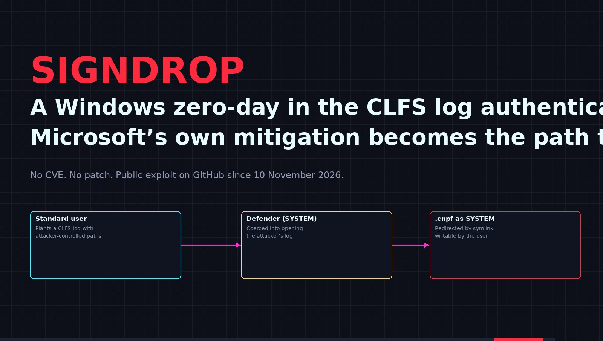
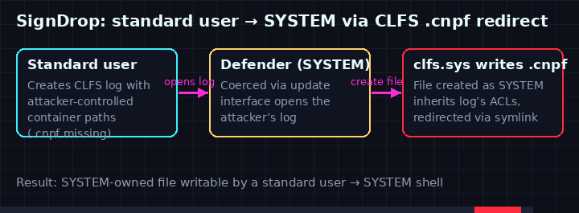

Windows Zero-Day SignDrop Turns a Standard User Into SYSTEM, and Microsoft Has Not Patched It

Microsoft spent October 2025 hardening the Common Log File System driver against a wave of kernel attacks. A year later, that same hardening is the bug.
On 10 November 2026, a researcher publishing as MSNightmare (Abdelhamid Naceri, also known as Nightmare Eclipse) posted working exploit code on GitHub called SignDrop. It is a local privilege escalation in clfs.sys that takes a standard user all the way to NT AUTHORITY\SYSTEM. No CVE. No advisory. No patch as of 11 November, and Microsoft has not confirmed the flaw.
The chain
The CLFS authentication mitigation stamps every log file with an HMAC signature stored in a .cnpf file next to the log, so the kernel can reject tampered logs. A normal user creates a log and controls the paths in its containers. When a privileged process later opens that log, the driver notices the .cnpf file is missing and creates it in the privileged process’s security context, not the user’s. The exploit uses object manager symbolic links to redirect that file creation wherever the attacker wants. In the published chain, the privileged process is Microsoft Defender, coerced through its update interface.

The result is a file written as SYSTEM that the standard user can write to. Chain it and you get a SYSTEM shell.
The part I enjoy most is that everything Microsoft did here is correct. The access checks run, the permissions are right. The logic just allows abuse. And the researcher notes the same write-in-their-own-context trick works against the tamper protection of any antivirus or EDR whose engine runs elevated, because from the security product’s kernel driver, the write came from the legitimate process itself. That makes this a candidate primitive for switching off an EDR without tripping its self-defense.
Scope and limits
This is local privilege escalation. The attacker needs code execution on the box first, so it is a post-exploitation primitive, not a way in. It was tested on Windows 11 26H2, Windows 11 26H2 Experimental, and Windows Server 2025 Experimental, on builds where the CLFS authentication mitigation shipped on or after 28 October 2025. The researcher estimates 80 percent of Windows installations are vulnerable, which is his number, not Microsoft’s.
Exposure tracks the registry value HKLM\SYSTEM\CurrentControlSet\Services\CLFS\Authentication\Mode: 0 is enforced, 1 is learning, 2 or 3 is off. No in-the-wild exploitation has been reported, and it is not in CISA’s Known Exploited Vulnerabilities catalog yet.
What to do while you wait for a patch
- Do not disable the CLFS mitigation to dodge this one. That reopens the older memory-corruption bugs the mitigation exists to stop.
- Keep standard users on least privilege. The exploit starts from a normal user session.
- Watch for
.cnpffiles created by privileged processes in unexpected locations, and for CLFS errors such asERROR_LOG_METADATA_CORRUPT. - Treat any local foothold as an escalation candidate until a fix ships.
Naceri’s recent drops, BlueHammer among them, ended up abused in the wild, so treat this as live the moment someone confirms it.
The uncomfortable takeaway for defenders: Microsoft shipped a defense, the defense created a new attack surface, and the exploit landed on the same day as Patch Tuesday. Until Microsoft confirms and ships, every elevated service that opens a log file it did not create is a candidate for this chain.
Sources
- MSNightmare: SignDrop proof of concept on GitHub
- BleepingComputer: New Windows SignDrop zero-day gives hackers SYSTEM privileges
- The Hacker News: SignDrop zero-day turns Windows CLFS security feature into SYSTEM access
- Cyber Security News: Windows SignDrop 0-day exploit through CLFS protection
- Cyber Kendra: SignDrop Windows CLFS zero-day gives SYSTEM access
- Microsoft Learn: CLFS authentication